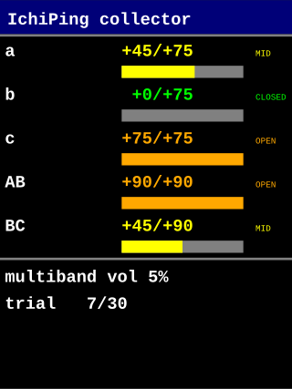

アーキテクチャ
[PC: collector_client.py] [MCU: 09_collector]
PING / GET / SET / SERVO / RUN / STOP → ichp_cmd_lbuf_feed
│
▼
OK ... / ERR ... / INFO ... 1 行 ← uart_write_line
│
ICHP audio frame ×repeats（servo_deg[5] = 実角）← send_frame
ASCII 行と ICHP バイナリは同一 UART に多重化。PC は ICHP magic で境界判定。
コマンド一覧 (shared/include/ichp_cmd.h 参照)
| 種別 | コマンド | 例 | 効果 |
|---|---|---|---|
| 診断 | PING | PING | OK PONG <build> 応答 |
| 取得 | GET CONFIG / GET HOME / GET OPEN / GET PINS | GET HOME | 現状を OK 行で返す |
| 設定 | SET VOLUME <0..100> | SET VOLUME 5 | TX ソフト音量（整数 %） |
| パターン | PAT INFO / PAT SELECT <idx> / EMIT <idx> | PAT SELECT 1 | パターンライブラリ（pc/patterns.yaml 定義）から選択／テスト発音。詳細は §パターン |
| 設定 | SET REPEATS <N> | SET REPEATS 30 | RUN 時の試行回数 |
| 設定 | SET PIN <servo> <deg> | SET PIN AB 0 | 当該扉/窓を RUN 時に固定 |
| 設定 | CLEAR PIN <servo> / CLEAR PINS | CLEAR PIN AB | pin 解除 |
| 校正 | SET HOME <servo> <deg> | SET HOME a 12 | home（閉位置, mechanical）を RAM 更新 |
| 校正 | SET OPEN <servo> <deg> | SET OPEN a 87 | open（全開位置, mechanical）を RAM 更新 |
| 校正 | SAVE HOME | SAVE HOME | home / open を MCXN947 PFlash 末尾セクタへ書込（boot 時に自動復元） |
| マニュアル | SERVO <servo> <deg> | SERVO a 45 | 1 ch を動かす → 移動距離分待機（300 ms + 5 ms/deg、最長 1.5 s）→ 自動で当該 ch OFF（hum 防止） |
| マニュアル | SERVO <servo> OFF | SERVO AB OFF | 1 ch のみ即 PWM 停止（脱力） |
| マニュアル | SERVO ALL OFF | SERVO ALL OFF | 全 PWM 即停止 |
| マニュアル | OPEN <servo> | OPEN a | open_deg に動かす → 移動距離分待機 → 自動で当該 ch OFF |
| マニュアル | CLOSE <servo> | CLOSE AB | home_deg に動かす → 移動距離分待機 → 自動で当該 ch OFF |
| マニュアル | OPEN ALL | OPEN ALL | a→b→c→AB→BC を 1 ch ずつ open_deg に動かす（窓 → 扉、各 ch 距離分待機 + 自動 OFF）。フル 180° なら ~4.5 s、変化なしなら即終了 |
| マニュアル | CLOSE ALL | CLOSE ALL | BC→AB→c→b→a を 1 ch ずつ home_deg に動かす（扉 → 窓、airlock、各 ch 距離分待機 + 自動 OFF） |
| 実行 | RUN | RUN | repeats 回データ採取 |
| 中断 | STOP | STOP | 次フレーム境界で中断 |
servo 名: a / b / c / AB / BC（大文字小文字無視）。
角度引数はすべて mechanical_deg（PCA9685 への生 PWM 角、レンジ 0..180）。
0..180° が 0.5..2.7 ms パルス幅（duty 2.5..13.5 %） に線形マップ — 上限は SG90 データシート（2.5 ms）より少し広げて実機メカ端到達を優先。
SERVO / SET HOME / SET OPEN / SET PIN 全部 mechanical 系。
表示用の logical 系 (閉=0, 開=+, 全 ch max 180) は docs/servo_coords.html を参照。
動作シーケンス
boot
└ servo_config_init → drive servos to home_deg → wait full-swing settle (~1.2 s, worst case 180° from arbitrary boot) → release PWM (idle, silent) → READY
loop:
└ poll UART RX
├ line complete → parse → dispatch → respond
│ └ on RUN:
│ for i in 0..repeats-1:
│ build trial pattern (pinned values + random fill)
│ drive servos, settle 400 ms
│ render selected pattern from pattern_lib (cached at start)
│ play_and_capture (full-duplex SAI1, 2 s window)
│ send ICHP frame (servo_deg[] = actual angles applied)
│ poll for STOP between trials
└ idle → __WFI
PC 側ツールの立ち上げ — pc/collector_client.py
1. 環境セットアップ（一度だけ）
uv 推奨（pyserial 1 つだけで動く軽量ツールなので extras なし uv sync で十分）:
# uv 初導入 (1 回だけ)
irm https://astral.sh/uv/install.ps1 | iex
cd pc
uv sync # pyserial だけ取得、~3 秒
conda 派の場合は conda env create -f environment.yml でも OK。詳細は pc/README.html 参照。
2. COM ポート確認
Windows: デバイスマネージャ → 「ポート (COM と LPT)」 → FRDM-MCXN947 OpenSDA の COM 番号を控える（例 COM7）。複数 USB シリアル機器がある場合は、ボードを抜き差しして消える / 出てくるポートが目印。
3. 起動 — REPL モード
cd pc
uv run python collector_client.py --port COM7 --out ../captures
起動成功時:
connected COM7 @ 921600 bps, output -> ../captures
< INFO IchiPing 09_collector ready
< INFO build May 17 2026 10:25:09
< INFO send PING to test, GET CONFIG for state, RUN to collect
Commands forwarded to the MCU (case-insensitive verb):
PING
GET CONFIG / GET HOME / GET OPEN / GET PINS
...
>
> プロンプトでコマンドを打つと そのまま 09_collector ファームに送信され、
MCU からの応答（OK ... / ERR ... / INFO ...）が < ... で表示される。
バイナリ ICHP フレームが流れてくれば自動でデマルチプレクスして
captures/<label>/frame_NNNNNN.wav に保存。
4. 基本コマンド例
疎通確認:
> PING
< OK PONG May 17 2026 10:25:09
> GET CONFIG
< OK CONFIG rate=16000 max_window=32000 pattern=multiband_default sel_idx=0 count=4 volume=5 repeats=30
> GET HOME
< OK HOME a=0 b=0 c=0 AB=0 BC=0
サーボ校正（ホーン取付調整時）:
> SERVO a 0 # マニュアル角度指定
< OK SERVO a deg=0
> SERVO a 12
< OK SERVO a deg=12 # 「閉」になる角度を目視で探す
> SET HOME a 12 # その値を home (閉) として焼く
< OK HOME a 12
> SERVO a 87 # 「開」になる角度を探す
> SET OPEN a 87
< OK OPEN a 87
> GET HOME # 5 ch 分の home 一覧
< OK HOME a=12 b=0 c=0 AB=0 BC=0
角度は整数のみ表示（newlib-nano の既定で%fがリンクされないため整数化）。 サーボ精度として 1° で十分。サブ度精度が必要になったら CMake LD に-u _printf_float追加で復活可。
詳細手順は docs/servo_coords.html §3。
ラベルを切替えてデータ採取:
> :label door_closed # PC 側ローカルコマンド (MCU に届かない)
label set to 'door_closed' (next frames -> <out>/door_closed/)
> SET PIN AB 0 # AB を「閉」固定
< OK PIN AB 0
> SET PIN BC 0
< OK PIN BC 0
> SET REPEATS 30
< OK REPEATS 30
> RUN
< OK RUN started repeats=30 pattern=multiband_default samples=28800
> saved frame_000000.wav (seq=1)
> saved frame_000001.wav (seq=2)
...
< OK RUN done frames=30
30 試行ぶん captures/door_closed/frame_000000.wav ... frame_000029.wav と labels.csv が保存される。
5. 起動 — プラン実行モード（推奨, 学習データ採取の本番）
JSON プランを書いて 1 コマンドで複数条件を順次採取:
[
{"label": "door_closed", "pins": {"AB": 0, "BC": 0}, "repeats": 30},
{"label": "door_half", "pins": {"AB": 45, "BC": 45}, "repeats": 30},
{"label": "door_open", "pins": {"AB": 90, "BC": 90}, "repeats": 30},
{"label": "amb_silence", "pins": {}, "pattern": "silence_2s", "repeats": 10}
]
uv run python collector_client.py --port COM7 --plan plan.json --out ../captures
各 step ごとに CLEAR PINS → SET PIN ... → SET REPEATS N → RUN を自動発行。所要時間は約 repeats × 3 秒 + 設定オーバーヘッド数秒 × step 数。上記 4 step / 計 100 試行で約 6 分。
6. ローカルコマンド（: で始まる、MCU には届かない）
| コマンド | 効果 |
|---|---|
:label <name> | 以降のフレーム保存先を captures/<name>/ に切替 |
:help | コマンド一覧表示 |
:quit / :exit | 切断して終了 |
7. トラブルシュート
| 症状 | 対処 |
|---|---|
FAIL opening COM7 | 別ターミナル（TeraTerm 等）が掴んでいる。閉じる |
< INFO IchiPing 09_collector ready が来ない | ファームが起動していない / COM 番号間違い / ボーレート不一致（921600 固定） |
OK RUN started 後にフレームが来ない | I²C 不通でサーボ駆動失敗 → SERVO a 45 単体で動作確認、デバッグ |
! frame seq=N CRC BAD 頻発 | UART バッファ溢れ。USB ケーブル変更、PC 側 USB ハブ介在を外す |
| サーボが微動するだけ | 外部 5V レール不足 → 1000 µF 電解 + 安定 5V 給電確認 |
ICHP フレーム内 servo_deg[5] の意味
このプロジェクトでは 当該試行で実際にサーボに送った角度（絶対）。
home_deg でも open_deg でもなく、PCA9685 に書き込んだ値そのもの。
pin 指定があった ch は pin の値、無指定 ch はランダム結果。
ラベル文字列は フレーム外、各 RUN の前に INFO label=... で送る。
PC 側は ASCII 行 / バイナリの逐次到着順を保つことで対応付け。
サーボ校正（home / open 位置決定）の運用
詳細手順は docs/servo_coords.html §3 校正手順 に集約。要点だけ:
SERVO a <deg>で 1 ch ずつ動かして「閉」位置と「全開」位置を探るSET HOME a 12/SET OPEN a 87で RAM に焼き付け（窓はopen - home = 75°、扉は90°が目標）- 5 ch ぶん繰り返し、
GET HOME/GET OPENで確認 SAVE HOMEで MCXN947 PFlash 末尾セクタ（0x001FE000, 1 page = 128 B）に書込。OK HOME savedが返れば成功。エラー時はERR SAVE_HOME code=<n>(servo_config.hのコード一覧参照)- 以降は boot 時に flash から自動復元（CRC-16 検証 NG ならコンパイル時
SERVO_CONFIG_DEFAULTSにフォールバック）
ディスプレイ（ILI9341 240×320）
09_collector は TFT を持っていれば自動で 5 サーボのリアルタイム状態パネルを描画する。 パネル不在でもファームはヘッドレス動作（display 関数は no-op）。

- 表示角度は logical_deg（閉 = 0, 開方向 = +）。mechanical_deg からの変換は
servo_config_to_logical()経由 - 色: 緑 = CLOSED（logical ≤ 3°）／橙 = OPEN（logical ≥ 95% × max）／黄 = MID
- 各 SERVO / RUN コマンドで即座に再描画
配線は 03_ili9341_test と同一（LPSPI1 + A2/A3/A4/A5 GPIO）。 本パネルの詳細仕様は docs/servo_coords.html §4 ディスプレイ表示。
パターンライブラリ
発振波形は MCU 内にハードコードせず、PC 側 pc/patterns.yaml が正本。
collector_client.py 起動時に MCU の RAM ライブラリへ全パターンを push し、
PAT SELECT <idx> で切替、RUN または EMIT <idx> で発音。
YAML フォーマット
2 種類。
pulse — 連続トーンのリスト。録音時間 = Σ(on+off) × repeat:
- name: multiband_default
type: pulse
repeat: 6
tones:
- {freq_hz: 2000, on_ms: 1, off_ms: 49}
- {freq_hz: 3000, on_ms: 1, off_ms: 49}
# ...
sweep — リニア chirp + 静音。録音時間 = sweep_ms + silence_ms:
- name: chirp_200_6k
type: sweep
start_hz: 200
end_hz: 6000
sweep_ms: 2000
silence_ms: 0
無音は freq_hz: 0 の 1-tone pulse で表現（特別な type 不要）:
- name: silence_2s
type: pulse
tones:
- {freq_hz: 0, on_ms: 0, off_ms: 2000}
上限（pattern_lib.h）:
ライブラリ 16 パターン、pulse 64 tones、合計 2000 ms。
REPL での操作
> :patterns # PC キャッシュ表示
[0] pulse tones=6 repeat=6 dur=1800ms multiband_default
[1] sweep 200..6000Hz sweep=2000ms silence=0ms dur=2000ms chirp_200_6k
[2] pulse tones=1 repeat=1 dur=2000ms silence_2s
[3] pulse tones=2 repeat=1 dur=400ms dual_low_high
> EMIT 3 # パターン 3 を 1 回テスト発音
< OK EMIT idx=3 name=dual_low_high samples=6400
> :select multiband_default # RUN で使うパターンを切替 (名前→idx 解決はローカル)
-> PAT SELECT 0 (multiband_default)
< OK PAT select idx=0 name=multiband_default
> RUN # 選択中のパターンで採取
< OK RUN started repeats=30 pattern=multiband_default samples=28800
...
EMIT <idx> は MCU 側コマンド（ichp_cmd.h の ICHP_CMD_EMIT）。
PC 側 REPL は EMIT N を検知すると再生終了 (OK EMIT) まで次の入力をブロックし、
再生中に次のコマンドを送って MCU の UART RX FIFO を取りこぼさせる事故を防ぎます。
MCU 側コマンド（直叩き用）
| コマンド | 機能 |
|---|---|
PAT INFO | ライブラリ内容を一覧表示 |
PAT SELECT <idx> | RUN で使うパターン選択 |
EMIT <idx> | パターン 1 回発音（録音なし、サーボ動かさず） |
PAT CLEAR | ライブラリ全消去 |
PAT PULSE BEGIN <name> / PAT TONE <hz> <on_ms> <off_ms> / PAT PULSE END <repeat> | pulse 追加（手動ロード用） |
PAT SWEEP <name> <start_hz> <end_hz> <sweep_ms> <silence_ms> | sweep 追加（1コマンド完結） |
通常は YAML 経由でロードするので、PAT PULSE * / PAT SWEEP を直接打つ必要はないはず。
YAML 編集後の反映
> :reload # patterns.yaml を再読込 + MCU に再 push
patterns.yaml reloaded (4 entries); pushing to MCU...
> PAT CLEAR
> PAT PULSE BEGIN multiband_default
...
reload complete. use :patterns to verify.
ボード RESET 不要。新しい name や型変更がそのまま使える。
プラン実行モードでのパターン指定
plan.json の各 step に pattern: <name> を入れると、step ごとに自動切替:
[
{"label": "door_closed", "pins": {"AB": 0, "BC": 0}, "pattern": "multiband_default", "repeats": 30},
{"label": "door_chirp", "pins": {"AB": 0, "BC": 0}, "pattern": "chirp_200_6k", "repeats": 30},
{"label": "amb_silence", "pins": {}, "pattern": "silence_2s", "repeats": 10}
]
省略すると前 step のパターン継続（または起動時の auto-select pattern 0）。
配線
08_mic_speaker_test の和集合 + 02_servo_test の I²C:
| 信号 | ピン | 備考 |
|---|---|---|
| SAI1 BCLK / FS / TXD / RXD | J1.1 / J1.11 / J1.5 / J1.15 | 08 と同じ（INMP441 + MAX98357A） |
| LPI2C2 SDA / SCL | D18 (P4_0) / D19 (P4_1) | 02 と同じ（PCA9685） |
| OpenSDA UART | LPUART4 | 921600 bps 双方向 |
| サーボ PWM | PCA9685 ch 0..4 | a/b/c, AB/BC |
| サーボ 5V | 外部 5V レール | MAX98357A と共通、1000 µF 電解必須 |
| ILI9341 TFT | LPSPI1 + A2/A3/A4/A5 GPIO | 03_ili9341_test と同じ。未接続でもファームは動作 |
ビルド手順（MCUXpresso for VS Code）
本プロジェクトには Config Tools 生成物（frdmmcxn947_cm33_core0/、CMakeLists.txt、
prj.conf、pin_mux.c 等）一式が既に含まれている。手順:
- VS Code → MCUXpresso → Import Project From Folder →
firmware/projects/09_collector/ - Configure preset で
debugまたはreleaseを選択 → ビルド - OpenSDA 経由で書込（GDB / Run target）
- シリアル端末で
PING送信 →OK PONG ...確認 →pc/collector_client.pyへ
CMakeLists.txt は以下のソースを取り込む（必要なら他プロジェクト雛形を作るとき参考に）:
main.c
../../shared/source/ichiping_frame.c
../../shared/source/sai_mic.c
../../shared/source/sai_speaker.c
../../shared/source/pca9685.c
../../shared/source/lu9685.c
../../shared/source/ichp_cmd.c
../../shared/source/servo_config.c
../../shared/source/ili9341.c
../../shared/source/collector_display.c
servo バックエンドは 02_servo_test と同じ慣例で、CMakeLists.txt の
mcux_add_configuration でマクロ指定:
# 既定: PCA9685 (16ch, I²C 0x40)
mcux_add_configuration(
CC "-DSERVO_BACKEND_PCA9685"
)
既定は PCA9685。実機 LU9685 で約 30° の往復スイングが出て V+ バルクキャパシタを足しても解消しなかったため、本プロジェクトでは PCA9685 をデフォルトに採用。
LU9685（20ch, 0x1F）に戻すなら -DSERVO_BACKEND_LU9685_I2C へ変更。
両 .c がビルド対象に入っているのでマクロ差替えだけで切替可能。
既知の制約 / TODO
- フラッシュ予約領域は単一スロット（last sector of m_flash1, 0x001FE000）。摩耗均等化（wear levelling）は無し。SG90 校正用途では SAVE HOME を 1 万回叩いても寿命に届かないため許容
- サーボ移動とキャプチャは直列。1 試行 = 0.4 s 待ち + 2 s キャプチャ + 0.56 s UART 送信 = 3 秒/フレーム。30 フレーム = 1.5 分。USB CDC（05 ベース）に乗り換えれば UART 送信 0.1 s に短縮可
- ラベル対応付けがシーケンシャル前提。並列 RUN 不可（並列にする場合はラベル ID をフレーム内に埋める拡張が必要）
- ランダム化は二値選択（home / open のいずれか）。連続角度ランダム化が必要なら
build_trial_patternを改修 - STOP は試行間境界でのみ反映。1 試行 3 秒のラグを許容する設計